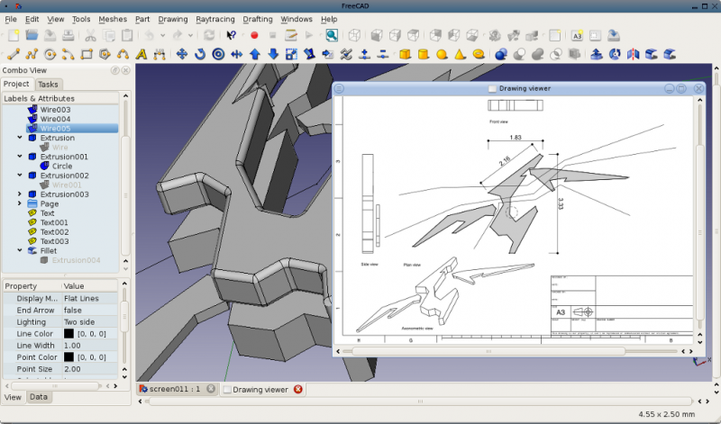
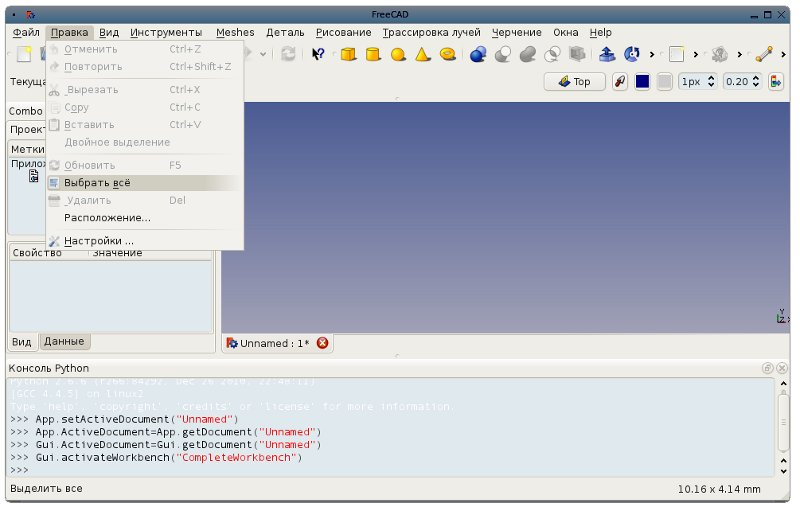
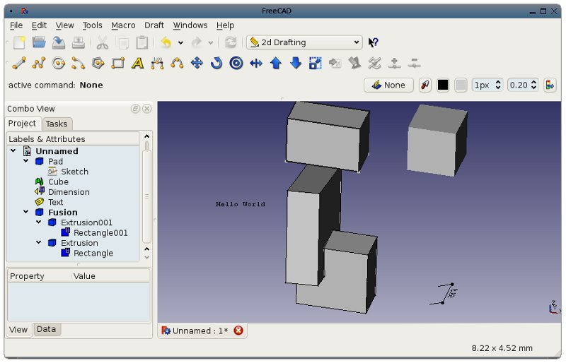
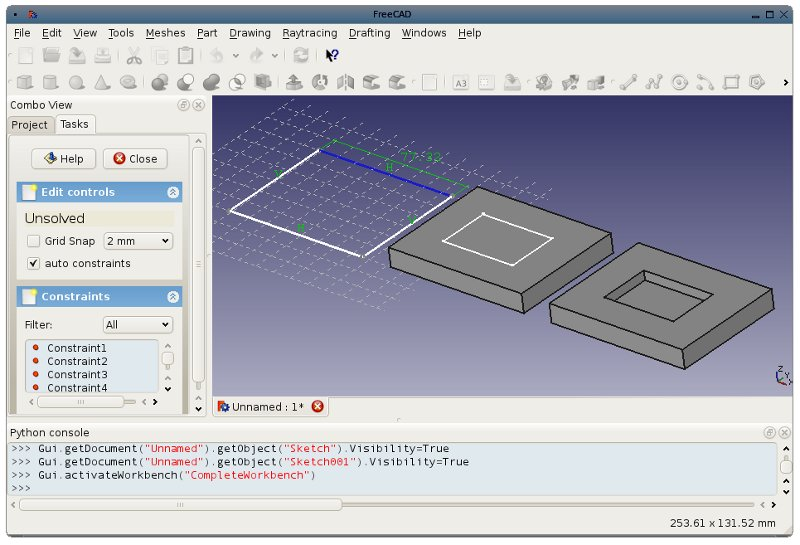
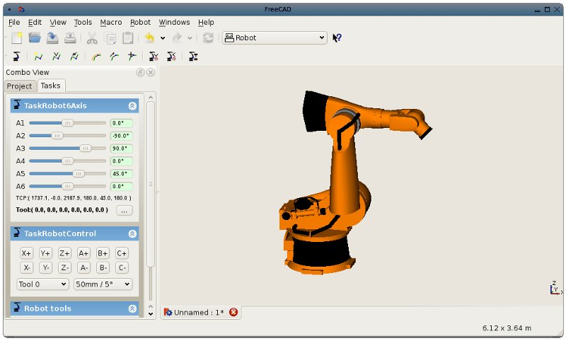
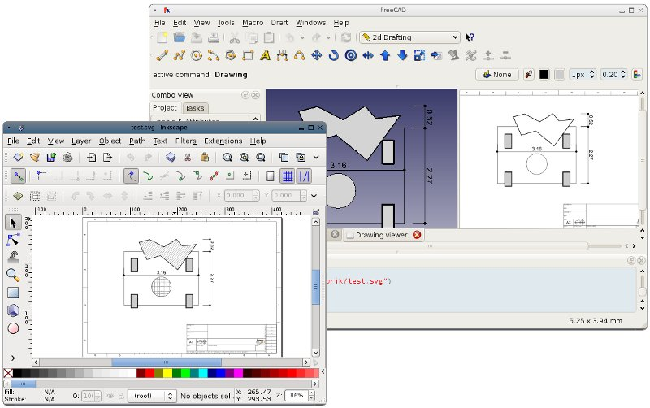
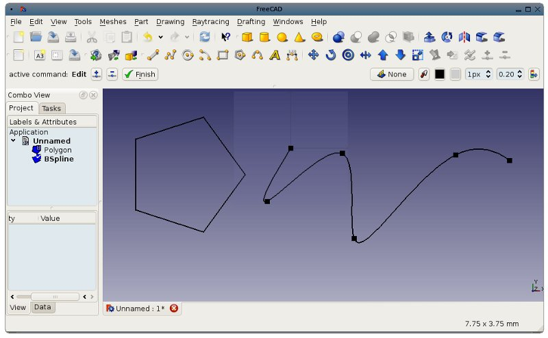

Здесь приведён список важных изменений и новых функций, доступных в FreeCAD версии 0.11. Полный список находится здесь.

Снимок экрана версии 0.11.
Общее
- FreeCAD translation Проект получает помощь от многих людей со всего света, и поэтому сейчас FreeCAD переведён на 15 языков: English, German, French, Italian, Swedish, Spanish, Portuguese, Russian, Ukrainian, Norwegian, Afrikaans, Finnish, Simplified Chinese, Croatian and Dutch. Несколько языков будет добавлено в следующей версии.

- Several improvements have been brought all over FreeCAD, for example the hierarchy tree now allows complex object stacks, keeping all your geometry history clean and easily accessible and modifiable. New python API improvements also allow objects to interact better with the tree, defining their own behaviour, icons, etc.

- The copy/paste mechanism has also been much improved, now allowing easy copy/pasting of objects between documents.
- The Part Workbench features new tools such as mirroring and edge fillets and chamfers.
Sketch and part design
- The constraint solver of the Sketcher Workbench has been totally rewritten and the Sketcher, even if still not complete, features already a good array of tools such as lines, rectangles, and constraints such as point coincidence, parallelism, fixed length or horizontal or vertical constraints.
- In addition to the Sketcher, a new PartDesign workbench now allow you to quickly build solids on top of Sketches. As a rule now in FreeCAD, everything is parametric, you can go back anytime to change your sketch, and all geometry that depends on it will be adapted automatically

Examples: Sketcher demo • PartDesign demo
Robot simulation
- The Robot Workbench has been extended with many GUI tools and is now fairly functional and allows you to easily simulate industrial robot movements

2D drafting
- Snapping has been greatly optimized and now works pretty fast, even on complex objects
- The "Trim/Extend" tool can now be called "Trim/Extend/Extrude", since it allows you to quickly extrude single faces, offering a convenient shortcut to the standard Part Extrude tool
- The Draft-to-Drawing sheet workflow has also been enhanced, all the Draft workbench objects can now be placed on a Drawing page, and they all offer the same level of comfort as standard Part objects, offering the ability to change their position, rotation and scale on the fly. They also offer some extra features, such as hatch pattern fillings

- The Draft workbench also offers new tools such as regular polygons and bSplines
- There is also a new Edit tool, allowing to edit the geometry of most of the Draft objects

- Dimensions can now have their text edited and moved, and wires can have an end arrow, allowing to use them as leaders
- Several commands such as move, rotate or dimensioning now allow you to do several copies without exiting the tool
- The Draft workbench also gained a python API.
- The DXF importer now support block attributes
Examples: Draft module demo
Images
- The image workbench now features an ImagePlane object, allowing you to display an image file inside the 3D scene, that can be used for example to construct geometry on top of scanned blueprints
Documentation
{kind=link}
{kind=link}
{kind=link}
{kind=link}
{kind=link}
{kind=link}
{kind=link}
{kind=link}